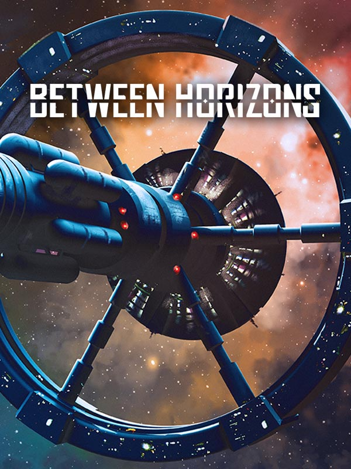

Between Horizons
Between Horizons
Details
|  | |
| Playtime | 10h 47m 0s |
| Last Activity | 2024-10-17 0:12:43 |
| Added | 2024-04-18 22:46:20 |
| Modified | 2025-10-02 10:26:03 |
| Completion Status | Completed |
| Library | Steam |
| Source | Steam |
| Platform | PC (Windows) |
| Release Date | 2024-03-25 |
| Community Score | |
| Critic Score | |
| User Score | |
| Genre | Adventure Indie Puzzle Real Time Strategy (RTS) |
| Developer | DigiTales Interactive |
| Publisher | Assemble Entertainment |
| Feature | Single Player |
| Links | Steam YouTube GOG Twitch Nintendo Playstation Official Website |
| Tag | 2.5D Adventure Choices Matter Conversation Detective Dynamic Narration Exploration Female Protagonist Futuristic Interactive Fiction Investigation Lore-Rich Multiple Endings Narration Pixel Graphics Point & Click Sci-fi Side Scroller Space Story Rich |
Description

ABOUT THE GAME
Between Horizons is set aboard the Zephyr, humanity's first generation ship en route to another star. You assume the role of Stella, who was born on the ship 24 years ago and recently inherited her father's post as Chief of Security. Dive into the conspiracy behind the incident that threatens to disrupt the Zephyr's social order and foil its mission.
Between Horizons is a modern 2.5D pixel art adventure that brings a branching narrative into a semi-open world. The team at DigiTales has applied numerous lessons from their first game Lacuna and proven solutions to detective game design problems to maximize player agency in the investigation process – all the while maintaining the tight pacing of a meaningful story that will ask you to reevaluate your moral compass and make increasingly tough decisions as the situation aboard the ship spirals out of control.

FEATURES
An Unusual Adventure: Between Horizons merges investigation gameplay with a branching sci-fi story in an ever-expanding Metroidvania-style environment.
Think For Yourself: The flexible evidence system lets you assign clues to cases, confront ship denizens about them, and solve any case with at any point in time. Everything you find on the ship may or may not be connected to the mystery at hand.
Failure is Very Much an Option: There are no second chances — submitting a wrong solution means the story will go with all the consequences. A new and improved auto-save system will make sure there is no going back, as the story branches and ends based on your decisions.
Set Your Course: Underneath the game's exciting and plausible sci-fi plot lies a number of thought-provoking problems inviting you to weigh intergenerational responsibility against personal freedom.
A New Dimension: Timeless pixel art merges with 3D environments and modern visual effects to create a unique visual style.